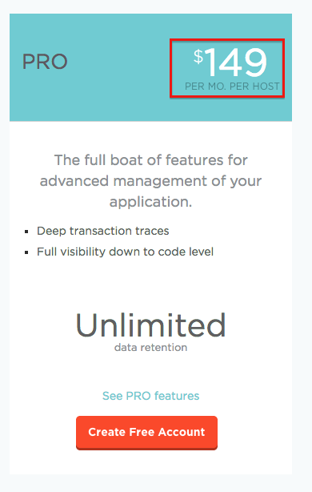
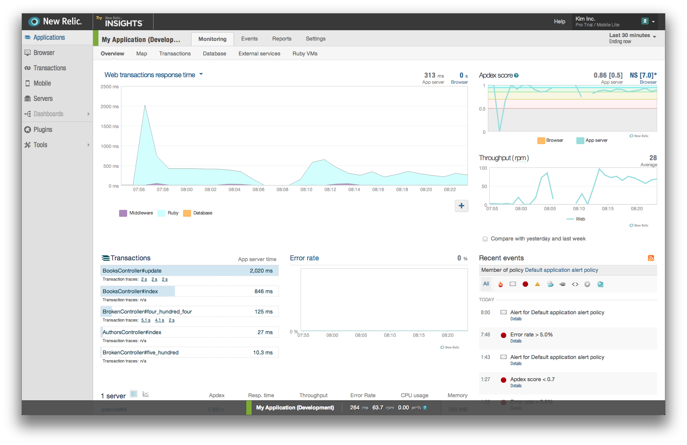

App Performance Monitoring
Fluentd + Elasticsearch + Kibana3
Created by Kim
Motivation
In NICE project, I had performance issue.
After some investigation, I finally found that the root cause was a huge table without index.
New Relic
- The pioneer of application performance monitoring
- Easy installation
- Relies on deep refelction that doesn't imapct performance
- Currently no other providers that match new relic
Rediculously Expensive!!

Fluentd + Elasticsearch + Kibana
Fluentd
Log aggregator made by Treasure Data
Elasticsearch & Kibana3
Schemaless database with powerful search engine and its beautiful frontend
Elasticsearch
Realtime Time Analysis
Kibana
Fully Customisable Dashboard
Demo
Creating No Relic Dashboard
We will create something like this
